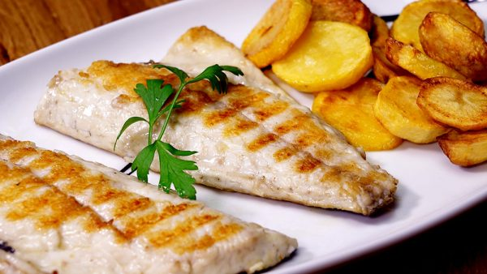
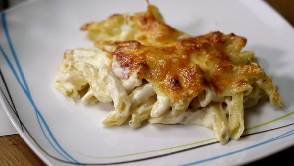
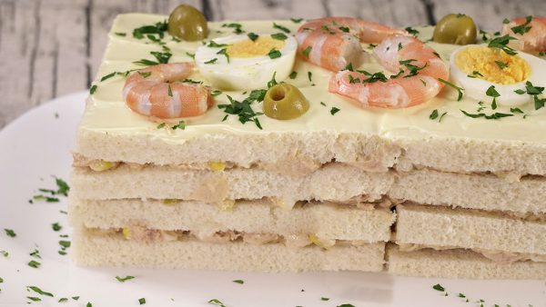
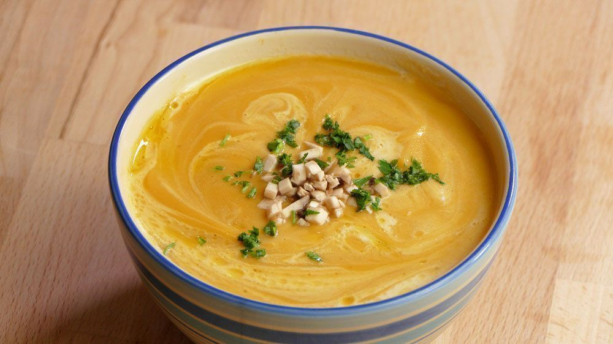

Aquí encontrarás diferentes presentaciones de comida, ¿Haz tenido sobre que preparar? O ¿Te han dado antojos de hacer algo nuevo para disfrutar? Bueno este es el lugar perfecto para tí, pues algunas de estas recetas son:
Empanadillas de atun al horno.
Pollo al horno con patatas.
Tarta de queso sin horno.
Arroz con leche.
Espaguetis rojo con tomate.
Macarrones con carne.
“No dejes para mañana lo que puedes comerte hoy”
Un plato que podemos encontrar dentro de nuestra selección de recetas de verano fáciles de hacer.
Estas brochetas o pinchos morunos son sin lugar a dudas un rico aperitivo en cualquier comida que se precie.
Los crepes, son esas tortitas redondas y finas, que están ricas tanto dulces como saladas.
Los ingredientes de esta deliciosa salsa casan muy bien con el sabor de algunas variedades de pescado.
En esta ocasión, vamos a prepararla con una base de galleta y mantequilla que, se hace de manera muy fácil y rápida.
Una receta muy conocida, con huevo y carne, ambos ingredientes ricos en proteínas, y con un sabor muy familiar.
Sincelejo, Sucre
Colombia
+573233244972
+573245510499
ramos.luisa@gmail.com
luisaramos.github.io